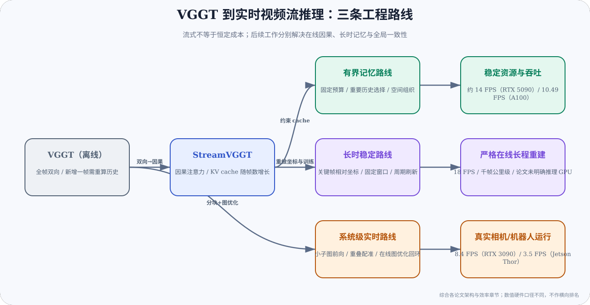
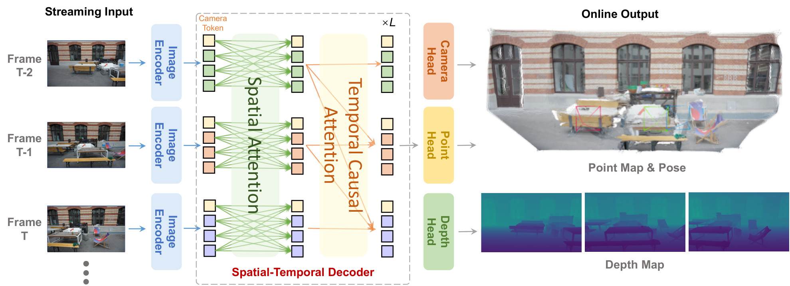
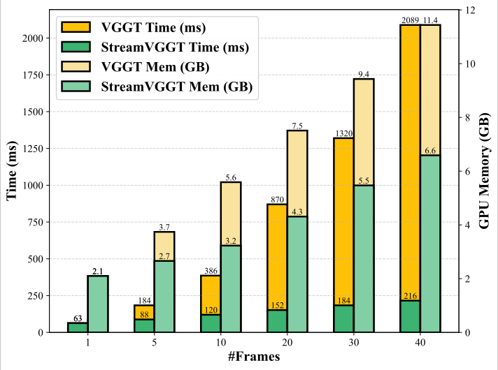
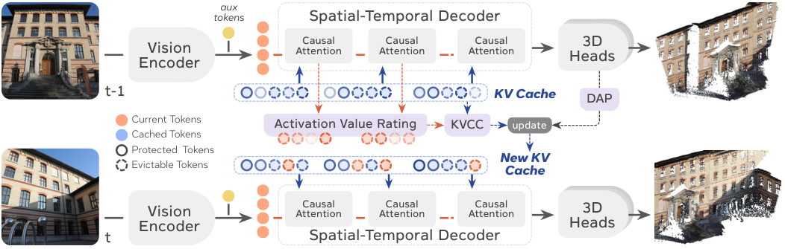
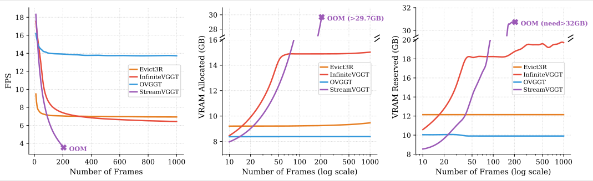
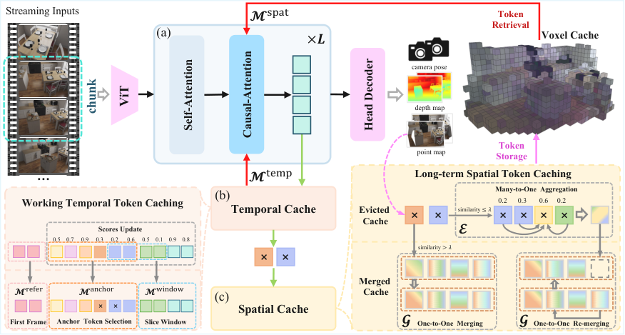
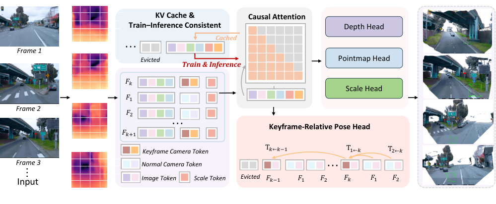
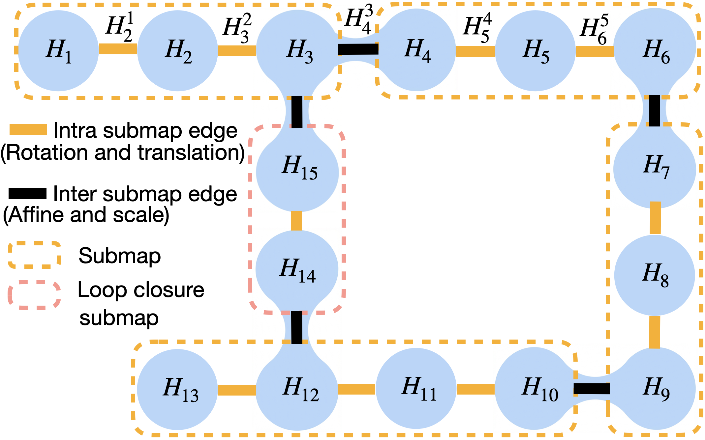

核心结论
方法脉络
关键证据
先给结论：有，而且已经从“能流”走到“资源可控地流”
真正的技术分水岭不是把视频切成很多段，而是新帧到达时能否只做增量计算、是否只看过去，以及显存与单帧时延能否在长视频上保持有界。
VGGT 本身是离线多视图模型：所有输入帧通过全局注意力联合交互。把它直接用于 live video 时，每来一帧都要重新处理历史序列，计算和显存都随序列快速增长。
StreamVGGT 给出了第一条直接改造路线：保留图像编码器和多任务 heads，把跨帧聚合改成 temporal causal attention；推理时缓存历史 K/V，新帧作为 Query 读取 cache 并立刻输出相机、深度和 point map。这个定义下，它确实是逐帧、future-invisible 的在线模型。
但“流式”“恒定成本”“实时”是三个不同条件。StreamVGGT 只首先解决了重复重算；后续论文才集中解决 cache 线性增长、单帧延迟上升、第一帧坐标锚导致的长程漂移，以及系统级回环一致性。
| 概念 | 必要条件 | 典型反例 |
|---|---|---|
| 真流式 / online | 新帧增量处理；不访问未来帧；无需重算全部历史 | VGGT-Long 的离线 chunk + 对齐 |
| 恒定资源 / O(1) | 单帧计算与 GPU cache 上界不随序列长度增加 | 原版 StreamVGGT 的 full-history KV cache |
| 实时 / real-time | 吞吐与延迟满足目标采样率；必须说明硬件、分辨率和是否含后端 | 只报告加速倍数但不给绝对 FPS |
| 系统级 live | 能从相机持续输入并在线维护全局地图 | 单次离线重建很快，但不能接持续相机流 |

起点：StreamVGGT 把 VGGT 变成逐帧因果模型
它是最符合你问题里“通过流式架构设计实现视频流推理”的直接工作。
结构上，原 VGGT 的 global self-attention 被拆成每帧 spatial attention 与跨帧 temporal causal attention。训练时可以并行输入完整序列，但 causal mask 保证帧 t 只看 ≤t；推理时保存每层历史 K/V，避免反复计算旧帧。VGGT 作为双向 teacher，通过蒸馏把几何先验迁入 causal student。
它的优点是语义非常干净：每帧都能输出 camera pose、depth、point map，且不需要后处理对齐。但 full-history cache 每帧都会追加约一帧的视觉 token，所以它只把原先每次重算全历史的代价降成了“当前帧 Query 访问越来越长的历史”。
论文 Table 7 的 A800 数据很能说明问题：1/5/10/20/30/40 帧时当前帧延迟分别为 63/88/120/152/184/216 ms，显存 2.1/2.7/3.2/4.3/5.5/6.6 GB。也就是说短序列可到约 16 FPS，40 帧已降到约 4.6 FPS；它应称为低延迟流式基线，而不是稳定 30 FPS 系统。
关键边界


第二阶段：把 KV cache 变成有界记忆
2025 年末到 2026 年的大量直接后续，核心不是再证明 causal attention 能工作，而是在固定预算下决定“哪些历史值得保留”。
OVGGT 是这一方向里最直接的 O(1) 表述：它用 FFN residual magnitude 作为 token 的几何显著性分数，不需要显式物化 attention map，因此仍可用 FlashAttention；同时保护第一帧和动态注册的历史 anchor，防止坐标系与长程约束被裁掉。默认 200K-token budget 约占 10 GB，论文在 RTX 5090 上的图 6 显示吞吐长期稳定在约 14 FPS。
STAC 则把 cache 组织成“短期时间工作集 + 长期空间体素记忆”：first-frame reference、滑动窗口和高分 anchor 留在 temporal cache，被逐出的 token 按预测 3D 坐标写入 voxel cache，通过合并与局部检索重用。它还用 chunk=4 的小批处理提高 GPU 利用率；这是 chunk-causal，会增加小段缓冲时延，但不看尚未到达的未来。
同一主线还有：Evict3R 的累计注意力逐层淘汰；InfiniteVGGT 的 key diversity rolling memory；XStreamVGGT 的 Query-guided pruning + K/V 量化（论文报告 4.42× 更少内存、5.48× 加速）；FrameVGGT 的帧级 coherent segment；RetrieveVGGT 的 query-key 相关性检索和 pose-aware spatial memory；RegVGGT 的 head/layer-specific 受控保留。它们共同说明：VGGT 流式化之后，研究重心已经转向视觉 KV memory management。
| 工作 | 核心缓存策略 | 实时/资源证据 | 代码状态 |
|---|---|---|---|
| OVGGT (2603.05959) | FFN-residual 自选择 + 动态 anchor 保护 | 约 14 FPS，RTX 5090；约 10 GB 固定预算 | 已公开 VAISR/OVGGT |
| STAC (2603.20284) | 短期时间 cache + 3D voxel 长期 cache + chunk | StreamVGGT-STAC 10.49 FPS，A100 40GB | 已公开 Rainzor/STAC |
| InfiniteVGGT (2601.02281) | diversity-aware rolling memory + layer-wise budget | 长至约 10k 帧；A100；论文表中 0.168 s/帧配置 | 已公开 |
| XStreamVGGT (2602.21780) | Query-guided pruning + K/V 量化 | 4.42× 内存下降、5.48× 加速（A100） | 已公开 |
| RetrieveVGGT (2605.09644) | 按当前 Query 检索相关历史帧 + pose-aware 压缩 | 固定 frame budget，constant memory；无统一绝对 FPS | 已公开 |
| RegVGGT (2609.23286) | 全局 anchor + head/layer-specific token regulation | 单张 RTX 3090；重心是极低保留率与精度 | 已公开 |
| FrameVGGT (2603.07690) | 帧级 coherent KV segment + 稀疏 anchor tier | 1.9–3.7 GB cache；未给统一文本 FPS | 论文页未见代码 |



第三阶段：不仅要快，还要避免长视频越跑越漂
KV cache 有界只解决资源问题；第一帧全局坐标、attention sink 与 stale cache 仍会让轨迹在数百到数千帧后崩掉。
LongStream 从建模目标上修改了 VGGT-style streaming backbone。它不再让所有 pose 永远相对第一帧，而是预测相对当前 keyframe 的 pose，把远距离外推变成固定难度的局部问题；独立 scale head 解耦形状与度量尺度。
训练上，它显式传递、裁剪与推理时相同的 KV cache（cache-consistent training），避免训练看短序列、测试却用长缓存的分布错位；推理中每若干 keyframe 周期性 refresh cache，清除污染但靠 keyframe-relative gauge 保持几何连续。
论文声称 strict online、future-invisible，单 GPU 18 FPS，并在千帧/公里级序列上保持稳定。这是目前比“短视频能流式”更接近真正持续视频流的一类设计。不过正文没有明确 18 FPS 所用 GPU 型号，不能与 OVGGT 的 RTX 5090 或 STAC 的 A100 数字做严格横向排名。

另一条可落地路线：VGGT-SLAM 2.0 的 submap + 在线图优化
这条路线没有把 VGGT 主干改成逐帧 causal model，而是把离线 VGGT 当作局部子图生成器，再用传统 SLAM 后端把子图拼成在线全局地图。
VGGT-SLAM 2.0 对小 submap 做 VGGT feed-forward，使用重叠关键帧估计子图间仿射与尺度，并在 factor graph 中加入 inter-submap、loop-closure 等约束。这样能接 live camera stream，也能做回环修正，但 submap 内部会等待多帧，并允许局部帧间的联合推理。
论文在 RTX 3090、submap=16 时报告 8.4 FPS（开启 open-set object detection 为 6.3 FPS）；VGGT 本身占每个 submap 1248 ms，是主要瓶颈。Jetson Thor 上 submap=4 时为 3.5 FPS。它是“系统级实时/在线”，不是“单帧到达立即经过 causal VGGT 得到输出”。
因此，如果产品需求包含全局回环、地图一致性和机器人端运行，这条路线比纯 causal cache 更完整；如果要求零 look-ahead 的逐帧几何输出，则应优先 StreamVGGT/OVGGT/LongStream 路线。

如何选择：按你的“实时”目标拆分
如果要做实验或原型，优先级不应只看论文 FPS，而应先确定允许的 look-ahead、序列长度、地图一致性与硬件。
我的综合判断
| 目标 | 优先工作 | 原因 | 主要代价 |
|---|---|---|---|
| 验证逐帧 causal VGGT | StreamVGGT | 最直接、代码公开、模型语义清楚 | cache 和时延随长度增加 |
| 无限流 + 固定资源 | OVGGT；再对照 STAC | 训练免费；OVGGT O(1)，STAC 空间记忆更结构化 | 约 10–14 FPS；固定预算会丢历史 |
| 千帧/公里级严格在线 | LongStream | 相对 gauge + cache refresh 同时处理漂移与缓存污染 | 需要重新训练；推理 GPU 口径不透明 |
| 机器人 live mapping + 回环 | VGGT-SLAM 2.0 | 系统后端完整，能全局优化和 loop closure | 只有 3.5–8.4 FPS；submap 带缓冲 |
| 30 FPS 摄像头级部署 | 轻量 backbone / 降分辨率 / 异步关键帧 | 现有 1B 级 VGGT 直系工作多在 10–18 FPS | 通常要牺牲稠密输出频率或质量 |
局限与开放问题
- 不同论文使用 A800、A100、RTX 5090、RTX 3090 或未披露型号 GPU，输入分辨率、frame stride、是否包含 encoder/heads/图优化也不同，FPS 不能直接横排。
- 多数论文把 10–18 FPS 称为 real-time 或 interactive；若产品标准是 30 FPS 或端到端低于 33 ms，它们仍未达到。
- STAC 使用 chunk=4 的 chunk-causal 处理，吞吐较高但需要短暂积累一组已到达帧；VGGT-SLAM 2.0 的 submap 缓冲更明显。
- 有界 cache 方法会在固定资源与长程历史之间做信息舍弃；论文平均指标并不能保证快速运动、动态物体、闭环和纹理贫乏场景都稳定。
- LongStream 的 18 FPS 正文只写 single GPU，未明确推理 GPU 型号；应在复现时重新做硬件一致的 latency/memory profiling。
证据与推断边界
- 论文明示：StreamVGGT 的因果注意力与 KV cache、Table 7 的绝对延迟/显存；OVGGT 的固定预算与 Figure 6；STAC Table 1 的 FPS；LongStream 的 18 FPS；VGGT-SLAM 2.0 §V-F 的实机速度。
- 本文推断：把这些工作归纳为“因果化—有界记忆—长程 gauge—系统后端”三阶段路线，是对多篇方法关系的综合，不是任一论文作者的原话。
- OVGGT 的约 14 FPS 来自 Figure 6 曲线读数，非正文表格精确值；因此以“约”标注。
- “最接近真正持续视频流”是基于 strict-online、固定资源与长程稳定三项共同判断，不代表所有 benchmark 上全面优于其他方法。
来源与版本
检索与核查时间：2026-11-09（Asia/Shanghai）。数据来自各论文 arXiv HTML、官方项目页与公开仓库；绝对性能仅在原论文硬件口径内解释。
- StreamVGGT paper — 因果注意力与 KV cache 起点；ICLR 2026
- StreamVGGT code
- OVGGT paper — O(1) 固定成本
- OVGGT code
- STAC paper — 时空双 cache 与 chunk-causal
- STAC code
- LongStream paper — 严格在线、相对 gauge、18 FPS
- LongStream code
- VGGT-SLAM 2.0 paper — 系统级 live mapping
- VGGT-SLAM code — 2.0 论文称新版代码将随发表释放
- InfiniteVGGT
- XStreamVGGT
- FrameVGGT
- RetrieveVGGT
- RegVGGT